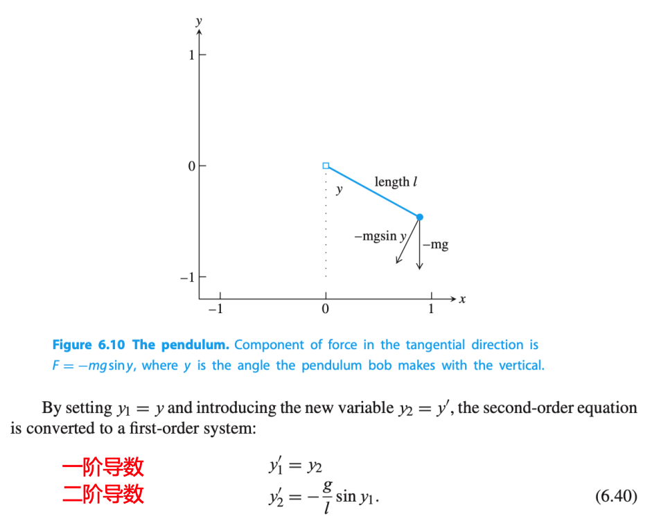
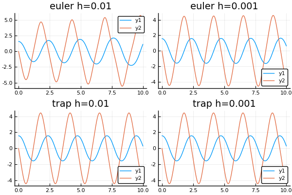
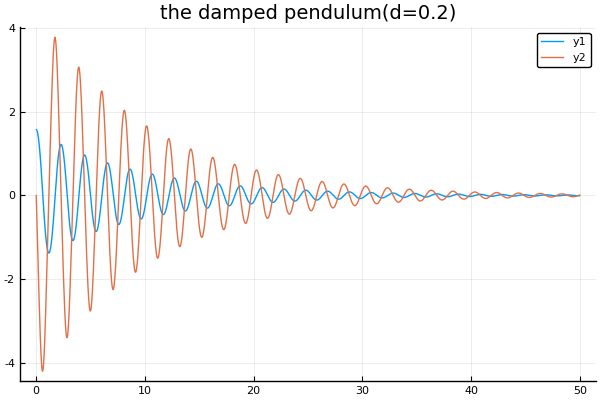
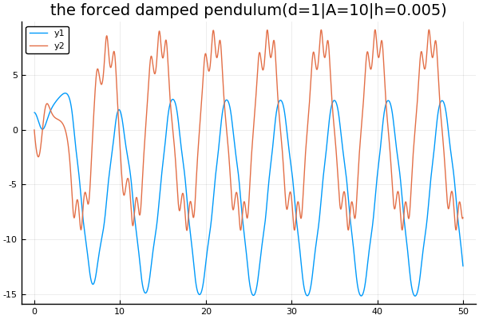
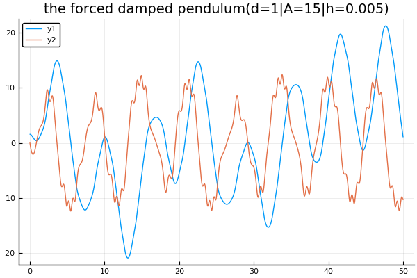
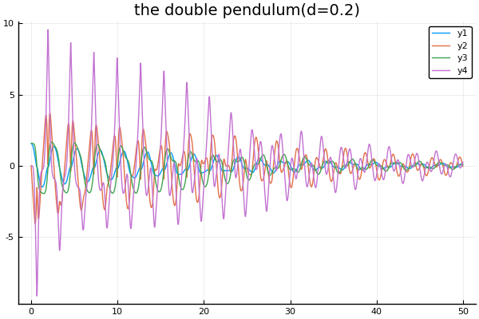

计算机仿真: 钟摆模型
OrdinaryDifferentialEquation.the_damped_pendulum_modelOrdinaryDifferentialEquation.the_double_pendulum_modelOrdinaryDifferentialEquation.the_forced_damped_pendulum_modelOrdinaryDifferentialEquation.the_pendulumOrdinaryDifferentialEquation.the_undamped_pendulum_model
钟摆模型
OrdinaryDifferentialEquation.the_pendulum — Function计算机仿真：钟摆
the_pendulum(df, a, b, y_0, h, method_name="euler")下图中，$y$表示钟摆和垂直方向的夹角(以弧度度量)，$l$表示钟摆杆的长度，当$y=0$，表示钟摆竖直向下，且它是一个关于时间$t$的函数。
- $y'$表示角速度
- $y''$表示角加速度
我们知道$ly$表示弧长，即它也是一个关于$t$的函数，表示钟摆的移动距离
- $ly'$表示钟摆的移动速度(瞬时速度)
- $ly''$表示钟摆的移动加速度

即上面的微分方程组是关于：
- $y'_1$表示角速度，则$y_1$表示角度
- $y'_2$表示角加速度，则$y_2$表示角速度
的方程组，且它是一个自主方程组，因为方程右侧没有对$t$有依赖
这里先给出一个方法drawchangingcurve，在后面将它画出钟摆在初始位置是角度为$\pi/2$，角速度为0的起始条件下，对应的变化曲线
using Plots
pyplot()
function draw_changing_curve(df, a , b, h, y_0, method)
t = a:h:b
y1, y2 = the_pendulum(df, a, b, [pi/2, 0], h, y_0, method)
return plot(t, [y1 y2])
end无衰减钟摆模型
OrdinaryDifferentialEquation.the_undamped_pendulum_model — Method无衰减钟摆
the_undamped_pendulum_model(t, y)无衰减钟摆也就是只计重力和拉力的钟摆
Example
plot(
draw_changing_curve(the_undamped_pendulum_model, 0, 10, 0.01, [pi/2, 0], "euler"),
draw_changing_curve(the_undamped_pendulum_model, 0, 10, 0.001, [pi/2, 0], "euler"),
draw_changing_curve(the_undamped_pendulum_model, 0, 10, 0.01, [pi/2, 0], "trap"),
draw_changing_curve(the_undamped_pendulum_model, 0, 10, 0.001, [pi/2, 0], "trap"),
title=["euler h=0.01" "euler h=0.001" "trap h=0.01" "trap h=0.001"]
)
图中$y_1、y_2$分别表示角度和角速度的变化情况。可以看到在使用欧拉方法步长为0.01情况下，钟摆的能量在不断增大，出现了较大的误差，显然不符合能量守恒定律。 但在步长为0.001情况下，有所改善，但是步数却增长了10倍。而同样在使用梯形方法时，在步长0.01的情况下，就获得了比较好的结果。
衰减钟摆模型
OrdinaryDifferentialEquation.the_damped_pendulum_model — Method衰减钟摆
the_damped_pendulum_model(t, y)衰减力，如阻力和摩擦力，在模型中通常和速度成正比，且方向相反，在这种情况下，钟摆方程变为:
$\qquad \begin{aligned} y'_1 &= y_2 \\ y'_2 &= -\frac gl \sin y_1 -dy_2 \end{aligned}$
其中$d>0$是衰减系数。衰减钟摆，会由于衰减而造成能量的损失，从任意的初始条件开始，最后都会到达有限平衡解$y_1=y_2=0$
Example
plot(
draw_changing_curve(the_damped_pendulum_model, 0, 50, 0.01, [pi/2, 0], "trap"),
title = "the damped pendulum(d=0.2)"
)
受力衰减钟摆模型
OrdinaryDifferentialEquation.the_forced_damped_pendulum_model — Method受力衰减钟摆
the_forced_damped_pendulum_model(t, y)对衰减摆钟模型中加入一个时间依赖项表示对衰减钟摆的外力。
考虑在$y'_2$右侧加上正弦项$A\sin t$：
$\qquad \begin{aligned} y'_1 &= y_2 \\ y'_2 &= -\frac gl \sin y_1 -dy_2 + A\sin t \end{aligned}$
这可以认为是一个受到振荡磁场影响的钟摆模型。
当添加力后，大量的动态行为都变成可能。对于微分方程的二维自治系统，Poincare-Bendixson定理之处轨迹都将趋向于规律运动， 例如如同钟摆最小位置的稳定平衡，或者像钟摆永远来回摆动的稳定周期循环。若附加的力使得系统非自治，因而允许第三种类型的轨迹，即混乱轨迹。
Example
系统自治：
plot(
draw_changing_curve(the_forced_damped_pendulum_model, 0, 50, 0.005, [pi/2, 0], "trap"),
title = "the forced damped pendulum(d=1|A=10|h=0.005)"
)出现稳定的周期循环：

系统非自治：
plot(
draw_changing_curve(the_forced_damped_pendulum_model, 0, 50, 0.005, [pi/2, 0], "trap"),
title = "the forced damped pendulum(d=1|A=15|h=0.005)"
)出现混乱轨迹：

双钟摆模型
OrdinaryDifferentialEquation.the_double_pendulum_model — Method双钟摆
the_double_pendulum_model(t, y)双钟摆由两个简单钟摆组成，其中一个钟摆挂在另外一个钟摆上，如果$y_1$和$y_3$是两个钟摆相对与垂直方向的角度，微分方程系统如下：
$\qquad \begin{aligned} y'_1 &= y_2 \\ y'_2 &= \frac {-3g\sin y_1 - g\sin(y_1 -2y_3)-2\sin(y_1-y_3)(y^2_4-y^2_2\cos(y_1-y_3))}{3-\cos(2y_1-2y_3)} -dy_2 \\ y'_3 &= y_4 \\ y'_4 &= \frac {2\sin(y_1-y_3)(2y^2_2+2g\cos y_1 + y^2_4\cos(y_1-y_3))}{3-\cos(2y_1-2y_3)} \end{aligned}$
其中$g=9.81$，两个杆的长度都是1.参数d表示旋转轴的摩擦，但d=0时，对于许多初始条件，双钟摆都表现为持续的非周期运动。
#Example
function the_double_pendulum_model(t, y)
g = 9.81
d = 0.2
dy1 = y[2]
dy2 = (-3g*sin(y[1])- g*sin(y[1]-2y[3]) - 2sin(y[1]-y[3])*((y[4])^2 - (y[2])^2*cos(y[1]-y[3]) ) )/(3-cos(2y[1]-2y[3])) -d*y[2]
dy3 = y[4]
dy4 = (2sin(y[1]-y[3])*(2(y[2])^2 + 2g*cos(y[1]) + (y[4])^2*cos(y[1]-y[3])))/(3-cos(2y[1]-2y[3]))
return Float64[dy1, dy2, dy3, dy4]
end
plot(
draw_changing_curve(the_double_pendulum_model, 0, 50, 0.01, [pi/2, 0, pi/2, 0], "trap"),
title = "the double pendulum(d=0.2)"
)